Conference T-Shirts
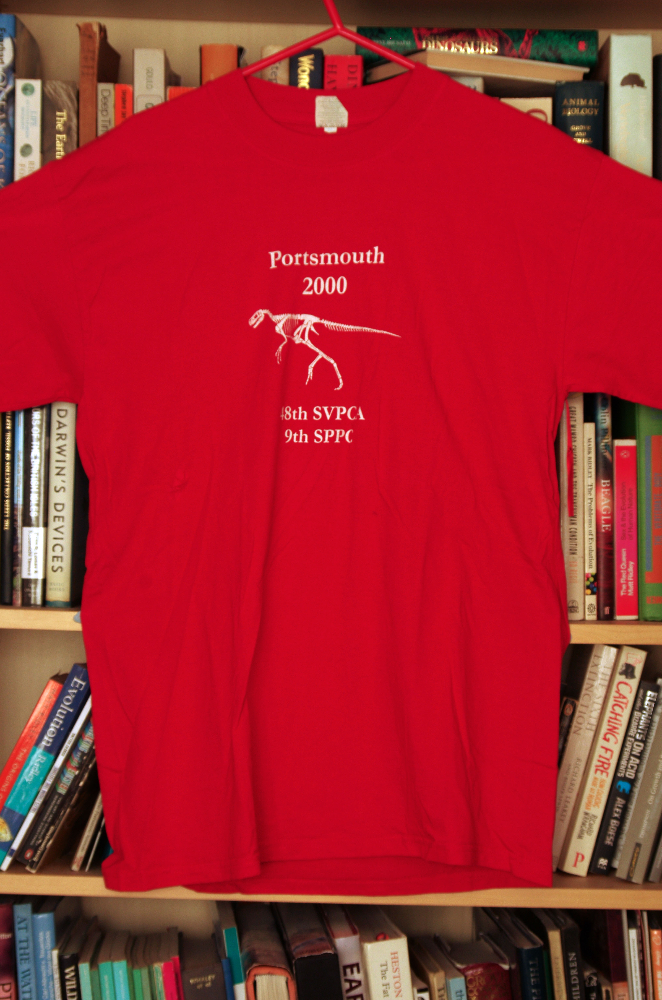
2000 Portsmouth Front
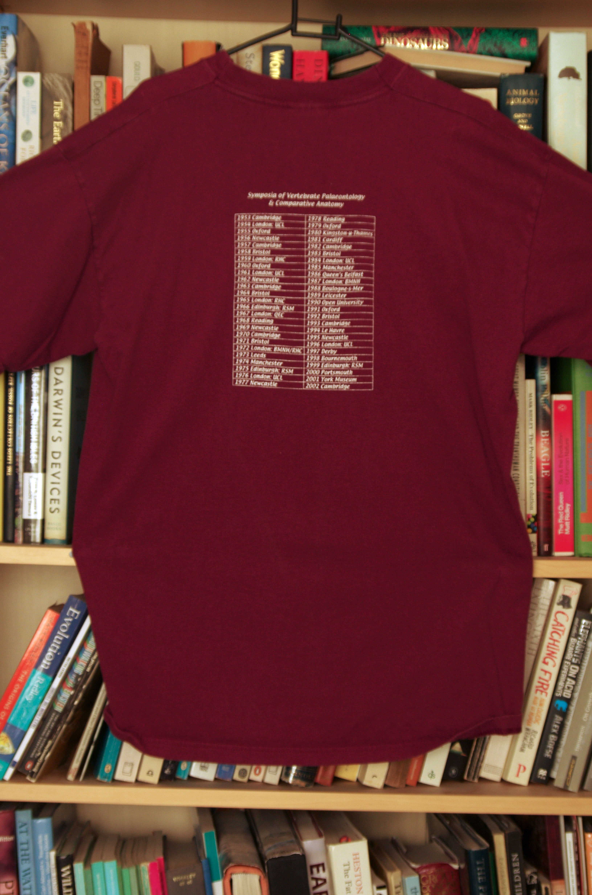
2002 Cambridge Back
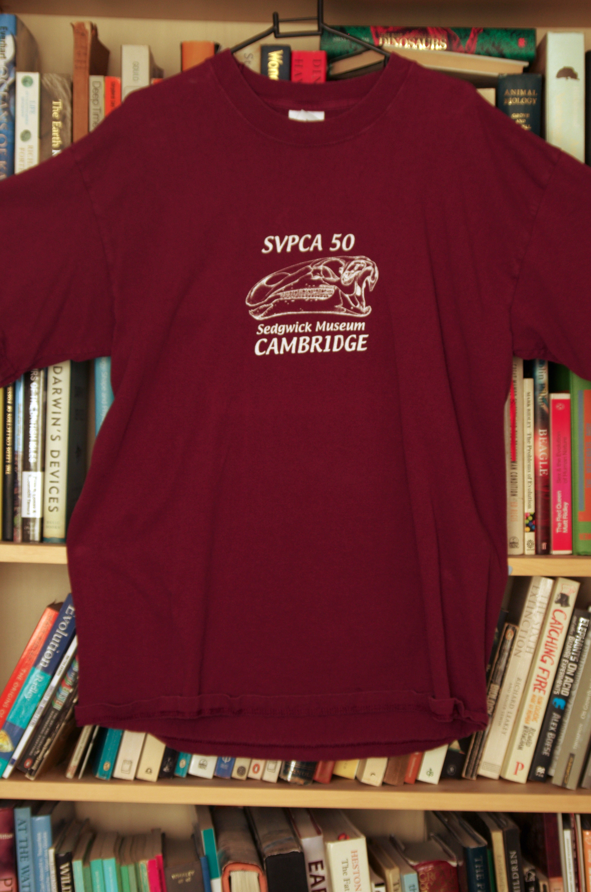
2002 Cambridge Front
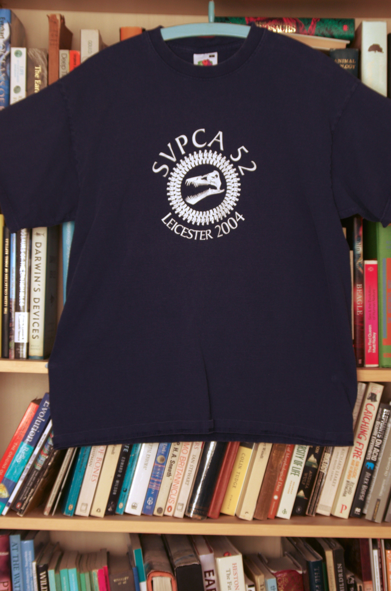
2004 Leicester Front
Designed by Mark Evans
The logo consists of Mark's reconstruction of the skull of Muraenosaurus surrounded by a ring of vertebrae
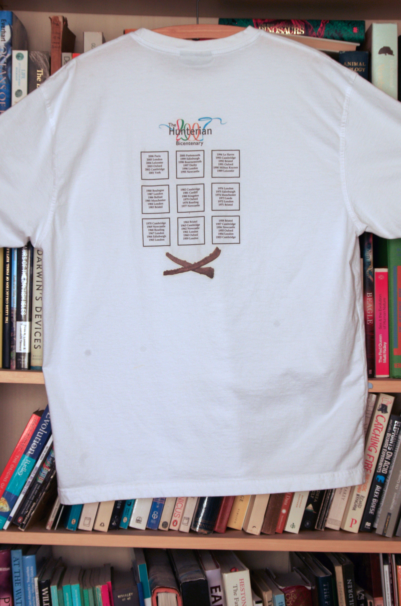
2007 Glasgow Back
Designed by Jeff Liston
A history of SVPCA conferences. The crossed symbols below are gill rakers of the giant Pachycormid Leedsichthys, reflecting Jeff's reserach interests
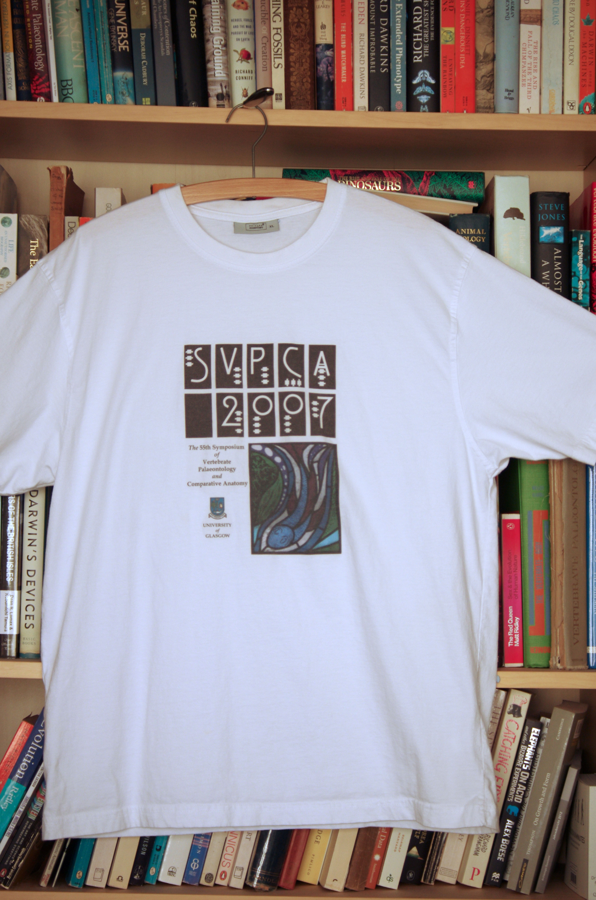
2007 Glasgow Front
Designer: Jeff Liston
Conference logo: Richard Forrest
Conference logo: Richard Forrest
The logo is based on fonts created by Charles Rennie MacIntosh, one of the finest architects of the 20th century who lived and worked in Glasgow
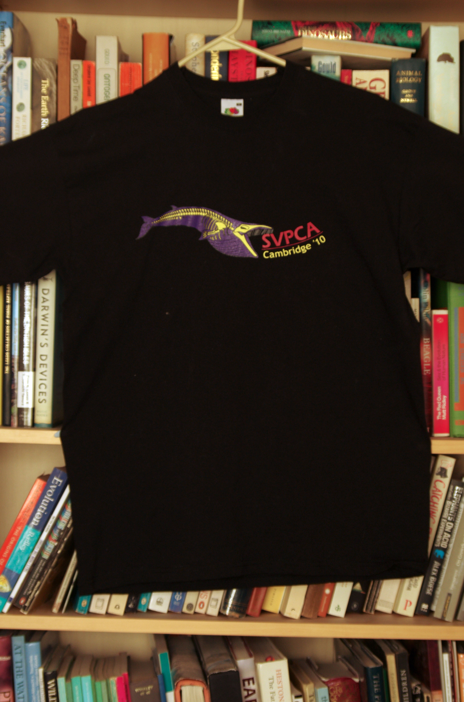
2010 Cambridge Front
Designed by Julia Molnar
The design refers to the whale which was on display in front of the University Museum of Zoology, Cambridge.
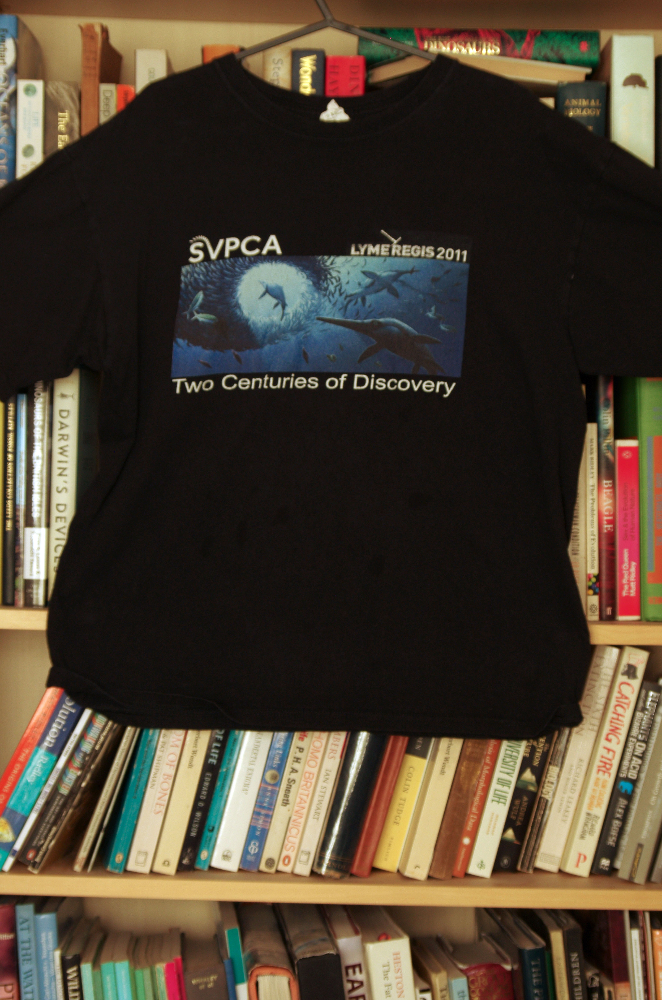
2011 Lyme Regis Front
Deisgned by Ann Forrest.
Image by Bob Nicholls
Image by Bob Nicholls
This refers to 200 years of fossil discoveries from the area around Lyme Regis

2012 Oxford Front
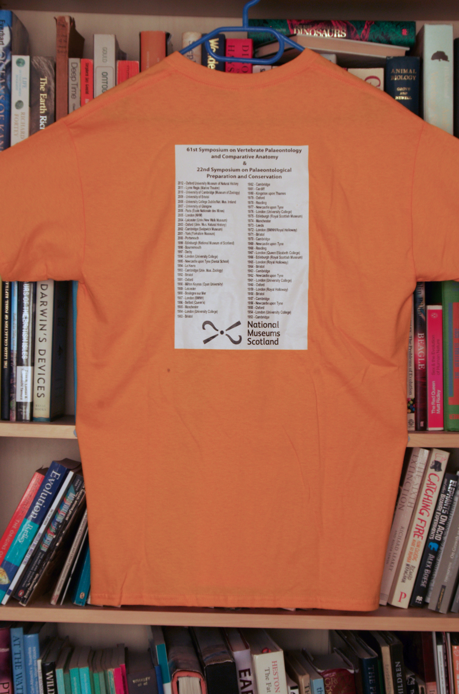
2013 Edinburgh Back
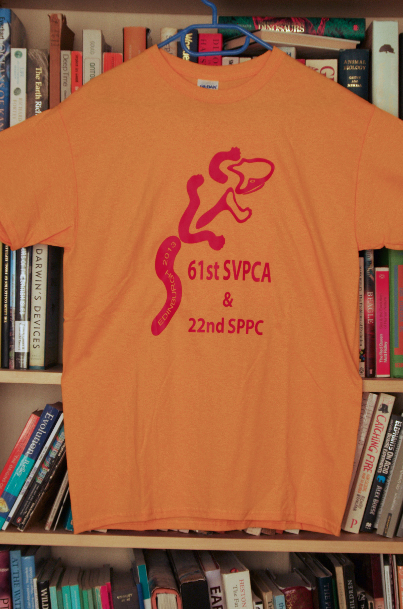
2013 Edinburgh Front
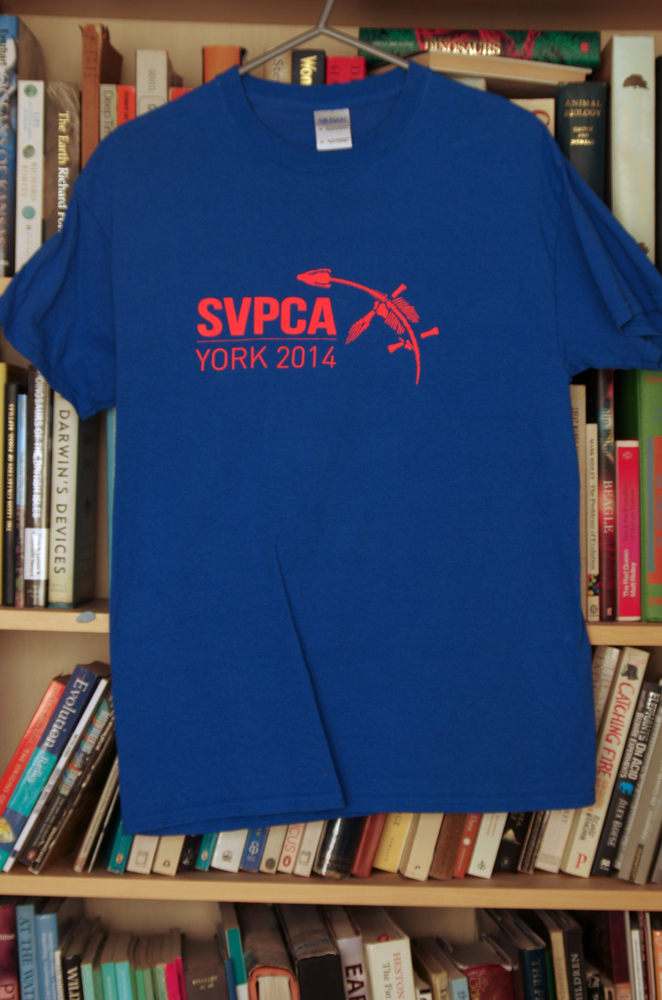
2014 York Front
The York 2014 logo was designed by Hester Baverstock, then a PhD student in our group. The figure of Rhomaleosaurus in the logo was adapted from the skeleton engraved into the pier at Whitby harbour.
Comment from Phil Cox
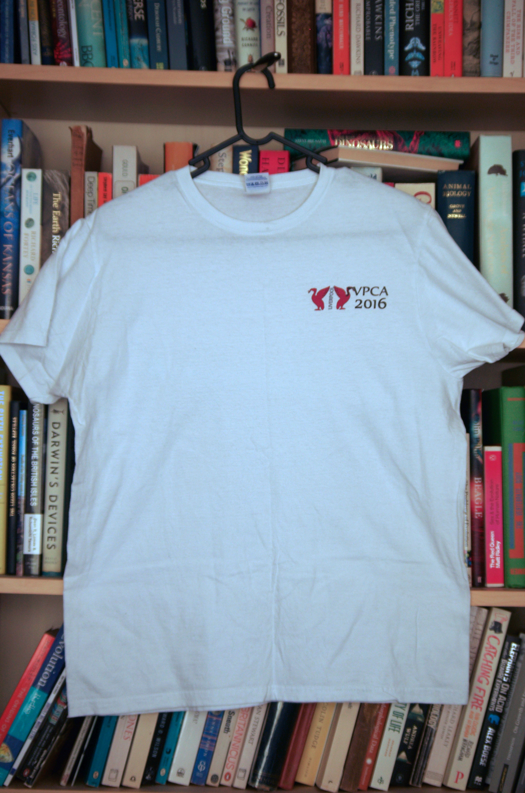
2016 Liverpool Front
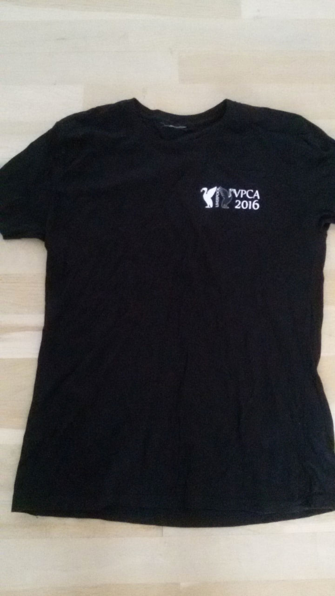
2016 Liverpool Front Black
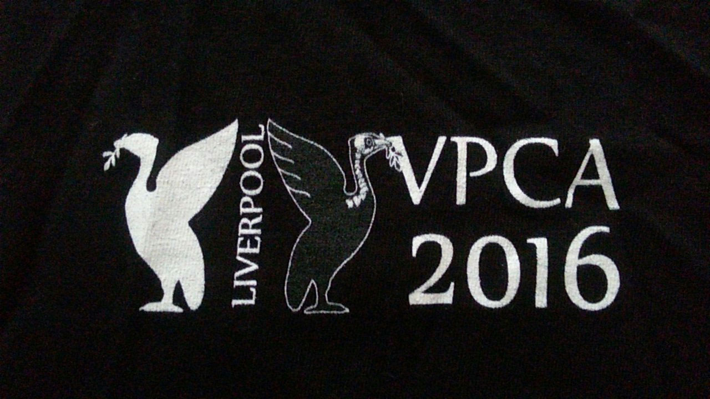
2016 Liverpool Logo
The logo shows the Liver Birds, a symbol of Liverpool
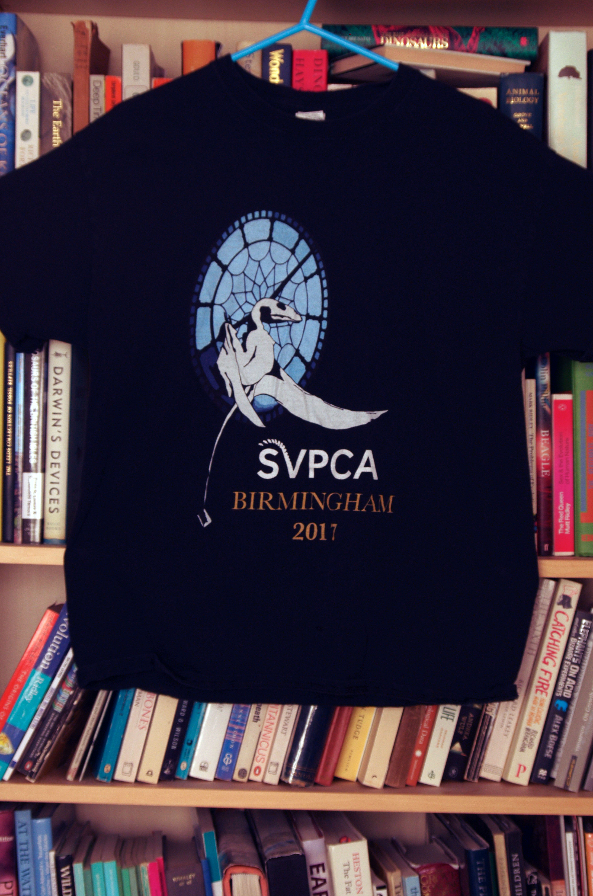
2017 Birmingham Front
Designer by Dr Plamen Andreev
The logo of the 2017 SVPCA meeting features a pterosaur clinging to one of the faces of the clock of the iconic ‘Old Joe’ tower, which lies at the heart of the UoB campus.
The logo was designed by Dr Plamen Andreev, a postdoctoral researcher in vertebrate palaeontology at UoB, and the pterosaur was inspired by a reconstruction of Eudimorphodon by Todd Marshall.
The logo was designed by Dr Plamen Andreev, a postdoctoral researcher in vertebrate palaeontology at UoB, and the pterosaur was inspired by a reconstruction of Eudimorphodon by Todd Marshall.